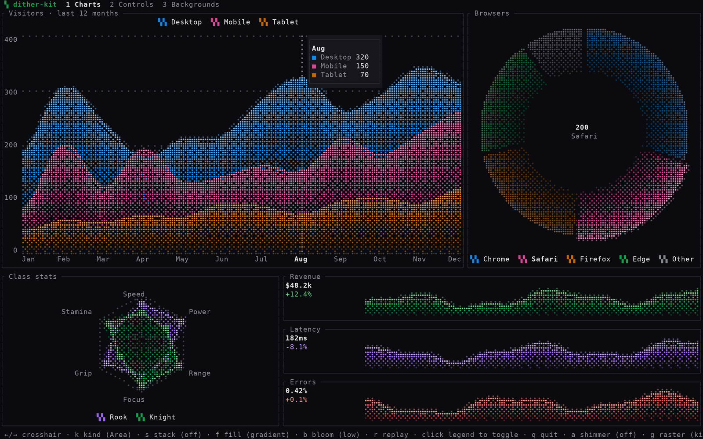

Dithering turns smooth values into patterns of lit and unlit pixels. It is an old print technique that gives interfaces a crisp, tactile texture. dither-kit-rs brings it to native Rust UIs and terminal apps.
- Deterministic
- Ordered Bayer thresholds are stateless per pixel, so nothing flickers. Motion is opt-in with the
shimmerflag. - Native
- GPU quads in GPUI. Real round dots in the terminal through kitty graphics, braille elsewhere. Text stays real text.
- Small
- The core has no dependencies. Each frontend is a thin painter.
Install with an agent
Give your coding agent this prompt to inspect the project, select the matching package, add dependencies correctly, and integrate dither-kit-rs in context.
Read the dither-kit-rs agent guide at https://deepanshumishraa.github.io/dither-kit-rs/ and its linked skill reference before making changes.
First inspect this repository: identify its Rust framework, workspace layout, MSRV, existing design conventions, and the screen or component that should use dithering. Do not assume the app uses GPUI, Ratatui, or Rune; choose the frontend that matches the code already here. If none fits, use dither-core and adapt its PixelGrid to the existing renderer.
Install the required dither-kit-rs dependencies in the correct Cargo.toml for this workspace. Respect the frontend-specific Rust version, version pins, platform libraries, and Rune Git patches in the guide. Then integrate an appropriate component into the relevant feature, not as an unrelated demo. Use realistic app data, stable unique IDs where required, and the existing theme and interaction patterns. Keep changes focused and avoid replacing the app's architecture.
Then review the resulting code for correct imports, ownership, state handling, responsive sizing, accessibility, and reduced-motion behavior where applicable. Run the repository's relevant formatting, build, lint, or tests if available. Fix issues caused by the integration. Finish with a concise summary of files changed, dependency/setup changes, checks performed, and anything the app owner still needs to decide.For repository-specific implementation details, builders, and caveats, the agent should read the dither-kit-rs skill before coding.
Choose a frontend
Start with the UI toolkit already used by the application. The frontends share the same rasterization core but expose native components for different environments.
| GPUI Kit | Native desktop app already built with GPUI Kit. Use dither-gpui. |
| Ratatui | Terminal user interface. Use dither-ratatui and confirm truecolor support. |
| Rune | Native app built with Rune. Use dither-rune and its pinned Git setup. |
| Other renderer | Use dither-core; paint each PixelGrid run in the host renderer. |
Do not add multiple frontends unless the app genuinely targets multiple UI environments. The GPUI and Ratatui crates re-export the core vocabulary.
Dependency reference
Dependency manifests are reference material for humans and agents. The minimum supported Rust version is 1.95, except dither-rune, which needs 1.99.1 or newer.
For a GPUI Kit app, add dither-gpui and pin gpui-kit to exactly =0.7.3. For a Ratatui app, add dither-ratatui with Ratatui 0.30.1 or newer. For another renderer, add dither-core.
GPUI Kit is pinned to 0.7.3, the release gpui-motion-kit 0.5 is built against.
Rune (Git)
dither-rune follows Rune's pinned development revision. Add both Git dependencies to your app, then add Rune's five crate patches to the app workspace root. Keep the same revision on every entry; Cargo does not inherit patches from dependencies.
[dependencies]
dither-rune = { git = "https://github.com/DeepanshuMishraa/dither-kit-rs", package = "dither-rune" }
rune = { git = "https://github.com/anomalyco/rune", rev = "30c564251a9c0e2687720a5b12c903af04d5f2b1" }
[patch.crates-io]
winit = { git = "https://github.com/anomalyco/rune", rev = "30c564251a9c0e2687720a5b12c903af04d5f2b1" }
parley_engine = { git = "https://github.com/anomalyco/rune", rev = "30c564251a9c0e2687720a5b12c903af04d5f2b1" }
wgpu-hal = { git = "https://github.com/anomalyco/rune", rev = "30c564251a9c0e2687720a5b12c903af04d5f2b1" }
accesskit_windows = { git = "https://github.com/anomalyco/rune", rev = "30c564251a9c0e2687720a5b12c903af04d5f2b1" }
accesskit_macos = { git = "https://github.com/anomalyco/rune", rev = "30c564251a9c0e2687720a5b12c903af04d5f2b1" }Requires Rust 1.99.1 or newer. Rune is Git-only at this revision, so dither-rune is not currently installable from crates.io. Read Rune's dependency and setup guide and browse its hello example. Linux builds need libxkbcommon-dev and libwayland-dev.
Agent integration workflow
A good integration starts from the host app and its actual constraints. Use this sequence whether you are implementing by hand or asking an agent.
- Inspect the app. Locate its workspace manifest, UI entry point, existing component patterns, theme, state model, and supported Rust version.
- Choose one frontend. Match the toolkit in use. If no frontend fits, use the core renderer-neutral API.
- Choose a component for the job. Charts communicate data; meters show progress; gradients and backgrounds add texture; avatars provide deterministic identity; buttons add an interactive action.
- Integrate in context. Preserve the app's layout and conventions. Supply meaningful data, stable GPUI IDs, and host-owned interaction state where the frontend expects it.
- Review and report. Check dependency constraints, compile the affected target, follow existing tests and accessibility patterns, then explain setup changes and validation.
For agents: consult the skill's frontend reference before selecting constructors or builders. If framework details are unclear, inspect the app's existing examples and dependency versions first.
Integration patterns
Keep the renderer native
The library paints pixels, while the host UI keeps its normal text, layout, focus, and event handling. Combine a dithered chart or meter with native labels instead of baking the entire interface into a bitmap.
Use stable and meaningful inputs
Choose tones and fills that match the app's existing palette. Give stateful GPUI components unique stable IDs. For Rune cached elements, pass every rasterization input into the cache key so updated data cannot reuse stale pixels.
Respect frontend state ownership
GPUI components keep interaction state in keyed element state. Ratatui widgets are values and the application owns hover, selection, and animation progress. Rune helpers paint elements while the application owns chart chrome, hit handling, and redraw scheduling.
Setup and troubleshooting
- Dependency resolution fails. Check the app's Rust version and preserve the GPUI Kit exact pin. Rune requires the same pinned Git revision for Rune,
dither-runecompatibility patches, and related crates. - Linux desktop build fails. GPUI needs
libfontconfig-dev,libwayland-dev,libxkbcommon-x11-dev,libx11-xcb-dev, and a working Vulkan driver. Rune needslibxkbcommon-devandlibwayland-dev. - Terminal colors look muted. Run Ratatui in a truecolor terminal. Braille cells take one colour each, so for per-dot colour use kitty or Ghostty, where kitty graphics are picked automatically.
- Terminal dots look blocky. You are on
Raster::HalfBlock, orDITHER_RASTER=halfblockis set. Unset it, or setRaster::BrailleorRaster::Kitty. - A kitty image stays blank under a popup. Call
dither_ratatui::kitty::flush(&mut stdout)after everyterminal.draw(..), so uploads never travel inside a cell that can be covered. - Rune element is blank initially. Its canvas sizes the grid after layout. Allow a subsequent frame and schedule redraws when inputs or animation frames change.
- Animation keeps using CPU. Stop scheduling frames when animation is unnecessary and respect reduced-motion preferences in the host app.
GPUI Kit
Components are RenderOnce values with an id. Hover, selection, entrance and tooltip state are kept for you, so you only pass in data.
use dither_gpui::prelude::*;
DitherChart::area("visitors", vec![
Series::new("Desktop", Tone::Blue, vec![186., 305., 237., 73., 209., 214.]),
Series::new("Mobile", Tone::Pink, vec![80., 200., 120., 190., 130., 140.])
.fill(Fill::Hatched),
])
.labels(["Jan", "Feb", "Mar", "Apr", "May", "Jun"])
.bloom(Bloom::Low)
.on_hover_change(cx.listener(|this, index: &Option<usize>, _, cx| {
this.focus = *index;
cx.notify();
}))Ratatui
Widgets are plain values. Hit-test helpers turn mouse positions into data indexes. A Raster decides how dots reach the terminal, and it is picked automatically on first use.
use dither_ratatui::{Chart, prelude::*};
terminal.draw(|frame| {
let chart = Chart::area(&series)
.labels(&labels)
.hover(chart.index_at(area, mouse.column, mouse.row))
.progress(ease::out_cubic(t))
.shimmer(true) // optional: the dots breathe and sparkle
.time(elapsed_secs);
frame.render_widget(chart, area);
})?;
// Send kitty image uploads after the frame, so popups can't swallow them.
dither_ratatui::kitty::flush(&mut std::io::stdout())?;Kitty | Real anti-aliased round dots with gaps, one colour per dot, at the terminal's own pixel size. Picked automatically in kitty and Ghostty. |
Braille | 2×4 small dots per cell, one colour per cell. The fallback for any truecolor terminal. |
HalfBlock | The old renderer: two square pixels per cell. Opt-in only. |
Override with Raster::set_default(..), per widget with .raster(..), or with DITHER_RASTER=kitty|braille|halfblock. Requires a truecolor terminal.
In the terminal
The same gallery page at the same size, before and after. Half blocks made every dot as wide as a character, so neighbouring dots touched and smeared. Now each dot is its own small round mark.

After: kitty graphics. Real round dots with gaps, one colour per dot.
cargo run -p dither-ratatui --example galleryRune
dither-rune exposes small helpers that return Rune elements. The helpers rasterize into a PixelGrid and paint horizontal runs as Rune shapes; your app owns chart labels, legends, interaction and redraw scheduling.
use dither_rune::{Cartesian, CartesianKind, Fill, Series, Tone};
let series = vec![Series::new("Desktop", Tone::Blue, vec![186., 305., 237.])];
let chart = dither_rune::chart("visitors", 3.0, "visitors-data", |w, h| {
Cartesian::new(CartesianKind::Area, &series).render(w, h)
});
let meter = dither_rune::meter("build-progress", 3.0, 0.72, Tone::Green, Fill::Gradient);Other helpers are avatar, sparkline, gradient and background. Give cached elements stable keys and pass the rasterization inputs as the cache key. For an animated background, derive a frame using dither_rune::frame(time, fps) and schedule redraws at a modest rate.
See the complete dither-rune gallery and the upstream Rune API guide. From this repository, run cargo run -p dither-rune --example gallery with Rust 1.99.1+.
Shimmer & dots
Two switches change how every component looks, in every frontend. Both are off by default, so existing apps look the same as before. Try them on the chart at the top of the page.
Shimmer
Keeps the dots alive after the entrance. Each lit dot breathes on its own phase, a soft sheen sweeps across, and a few dots flash. Shapes never move, so charts stay readable. It pauses when the system asks for reduced motion.
// GPUI: components schedule their own frames.
DitherChart::area("visitors", series).shimmer(true)
// Ratatui: redraw every frame and pass the running time.
Chart::area(&series).shimmer(true).time(elapsed_secs)
// Rune: every canvas built inside the closure shimmers.
dither_rune::shimmer(frame, fps, || view(state, cx))
// Anything else: on a freshly rendered grid.
grid.shimmer(time);Dot style
DotStyle::Square fills each pixel edge to edge, the classic hard-edged dither. DotStyle::Round draws a disc in the middle of each pixel with a gap around it, like an LED panel or a halftone print. It matches the terminal's kitty-graphics dots.
// GPUI: the whole app, or one component.
dither_gpui::set_dot_style(DotStyle::Round, cx);
DitherMeter::new("upload", 0.6, Tone::Blue).dot_style(DotStyle::Square)
// Rune: every element built inside the closure.
dither_rune::dots(DotStyle::Round, || view(state, cx))In the terminal the raster sets the dot shape: kitty graphics are round, braille dots are small, and half blocks are square. Every gallery takes --animate, and the GPUI and Rune galleries take --round.
Components
These demos run on a JavaScript port of the core, so they show the same pixels the Rust crates draw. Turn on shimmer to see the animation flag every frontend shares.
Pie & donut
Hover lifts a slice. The centre shows the total.
DitherPie · PieChartRadar
Rings, spokes and dithered polygons.
DitherRadar · RadarChartSparkline
No axes or chrome. Glows on hover.
DitherSparkline · SparklineButton
The texture thickens on hover and press. Try it.
DitherButton · ButtonAvatar
32 mirrored bits and 180 hues. Same name, same avatar, in Rust and here.
DitherAvatar · AvatarGradient
A two-tone blend or a one-tone fade.
DitherGradient · GradientBackground
Animated fields for heroes and empty states. They stop when the system asks for reduced motion.
DitherBackground · BackgroundMeter
A progress bar in every fill style. Springs to new values on GPUI.
DitherMeter · MeterVocabulary
All frontends share a small set of types from dither-core.
Tone
Seven named tones, or any hue. Each expands into a perceptual OKLCH ramp with tone.shade(level).
Fill
DotStyle | Square Round: how desktop frontends draw each pixel |
Bloom | Off Low High Aura: a dithered glow around lit pixels |
Matrix | Bayer2 Bayer4 Bayer8 Halftone Noise |
Field | Plasma Waves Ripple Noise Aurora |
Direction | Up Down Left Right Radial |
Motion & accessibility
- Shimmer. One flag in every frontend keeps the dots alive: each breathes on its own phase, a sheen sweeps across, and a few flash. Use
.shimmer(true)in GPUI and Ratatui, anddither_rune::shimmer(frame, fps, || view)in Rune. Shapes never move, and it pauses under reduced motion. - Motion. GPUI uses gpui-motion-kit: tween entrances, spring buttons and meters, a sliding tooltip, and a looping clock for backgrounds. All of it respects reduced motion.
- Buttons.
DitherButtonwraps the GPUI KitButton. Focus, Tab order, Enter and Space, the focus ring and the disabled state come from Kit. - Semantics. Charts are labelled figures, meters are progress indicators, and legend entries are focusable buttons.
- Theme. Axes, tooltips and legends use the active Kit theme tokens, in light and dark.
The core
Everything rasterizes into a PixelGrid. Paint its runs with any renderer: a game engine, an image encoder or a web canvas.
use dither_core::*;
let grid = Gradient::new(Tone::Blue).to(Tone::Purple).render(64, 32);
for run in grid.runs() {
paint(run.x, run.y, run.len, run.color);
}